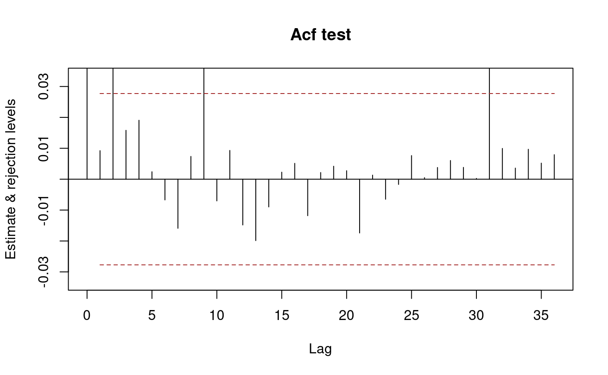
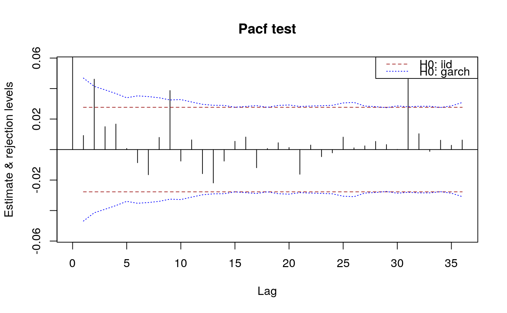
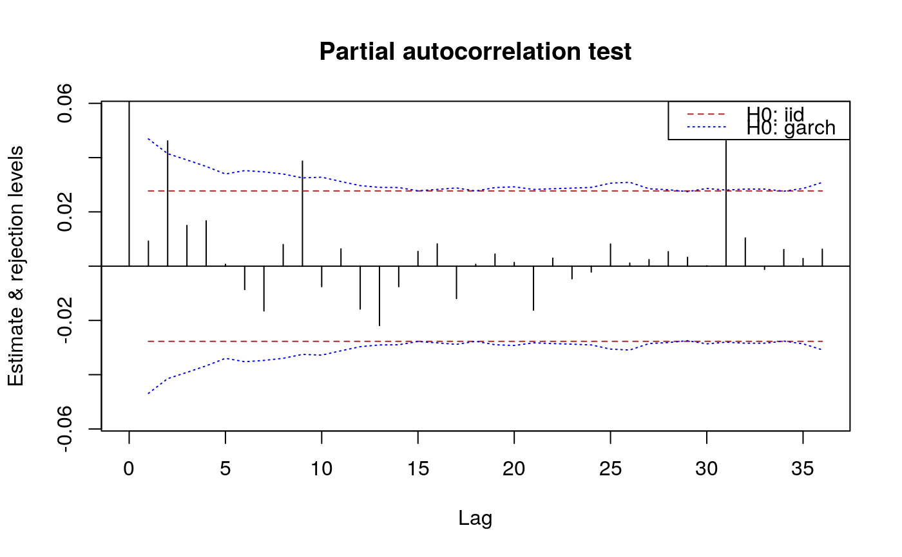
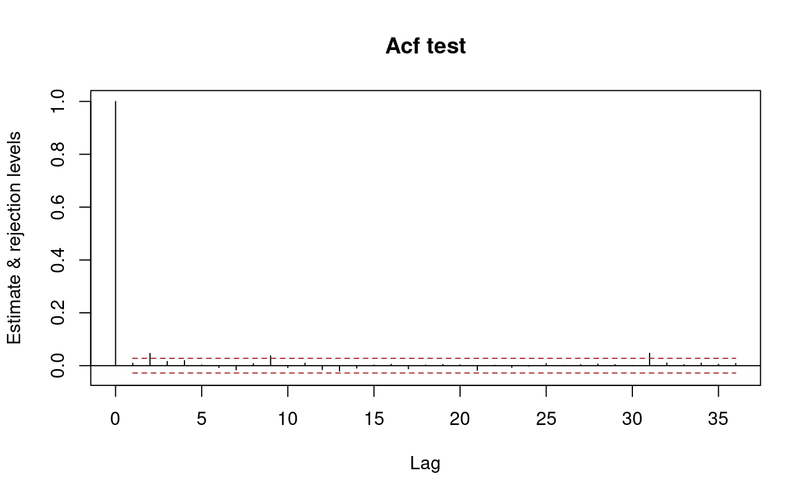
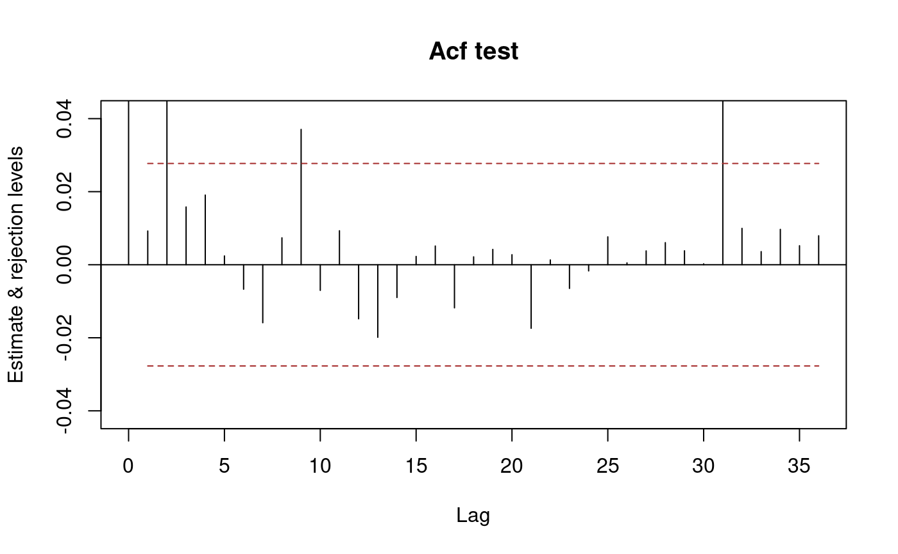
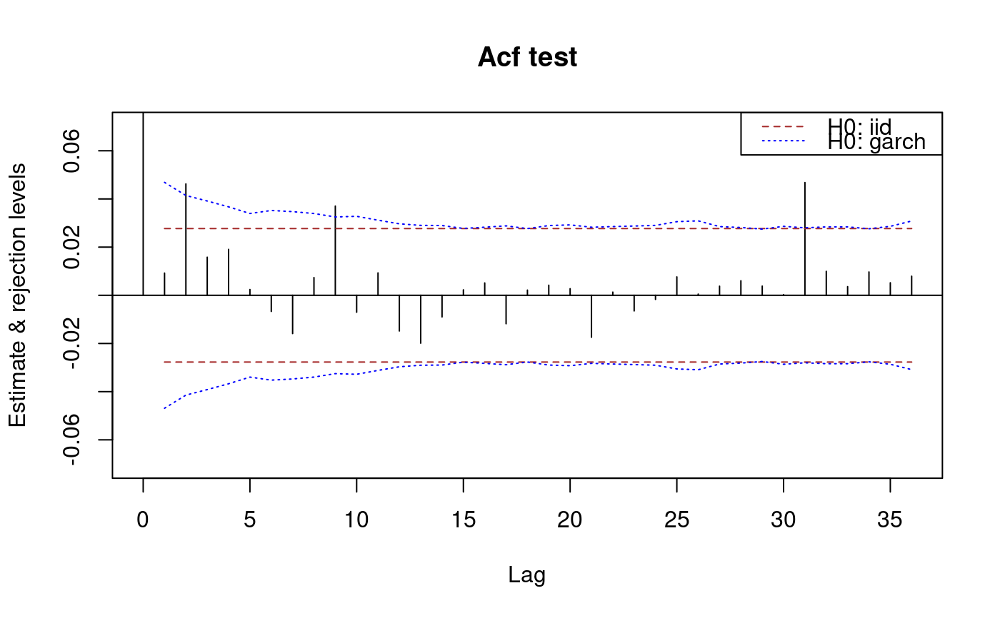
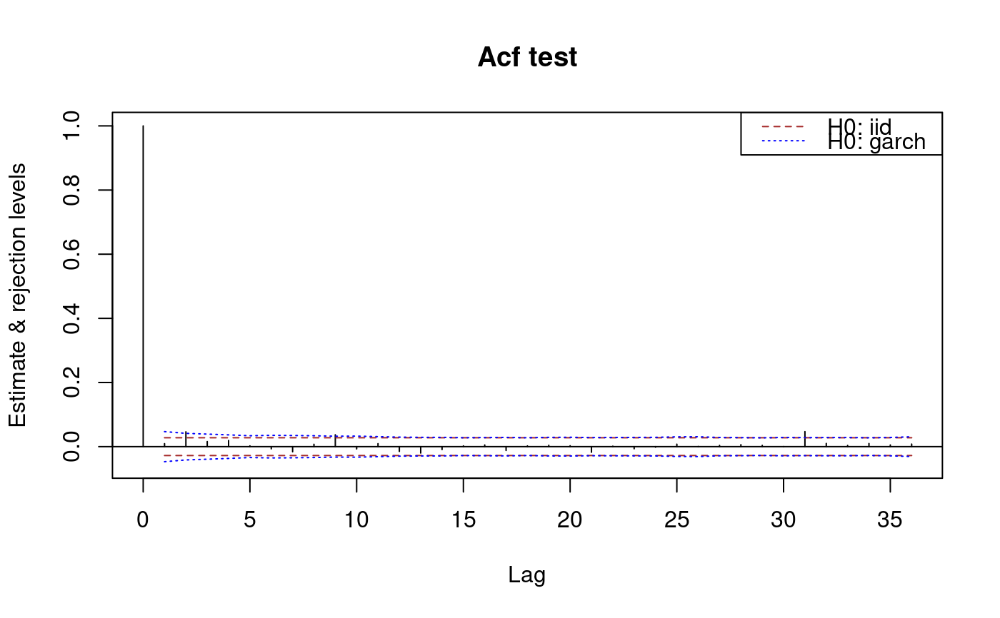

Plot methods in package sarima
plot-methods.RdPlot methods in package sarima.
Methods
signature(x = "SampleAutocorrelations", y = "matrix")signature(x = "SampleAutocorrelations", y = "missing")signature(x = "SamplePartialAutocorrelations", y = "missing")Examples
n <- 5000 x <- sarima:::rgarch1p1(n, alpha = 0.3, beta = 0.55, omega = 1, n.skip = 100) x.acf <- autocorrelations(x) x.acf#> An object of class "SampleAutocorrelations" #> Lag_0 Lag_1 Lag_2 Lag_3 Lag_4 #> 1.0000000000 0.0092237809 0.0462439369 0.0158099618 0.0190673118 #> Lag_5 Lag_6 Lag_7 Lag_8 Lag_9 #> 0.0024019453 -0.0067012229 -0.0158854308 0.0073616856 0.0370443532 #> Lag_10 Lag_11 Lag_12 Lag_13 Lag_14 #> -0.0070213695 0.0092983262 -0.0148073423 -0.0198712319 -0.0089685846 #> Lag_15 Lag_16 Lag_17 Lag_18 Lag_19 #> 0.0022659300 0.0051228722 -0.0118102608 0.0021511690 0.0041894847 #> Lag_20 Lag_21 Lag_22 Lag_23 Lag_24 #> 0.0027389189 -0.0174060423 0.0013128001 -0.0064835614 -0.0016915894 #> Lag_25 Lag_26 Lag_27 Lag_28 Lag_29 #> 0.0076314314 0.0004888890 0.0037819155 0.0060377657 0.0038137486 #> Lag_30 Lag_31 Lag_32 Lag_33 Lag_34 #> 0.0002381702 0.0468263965 0.0099483406 0.0035855874 0.0096774891 #> Lag_35 Lag_36 #> 0.0051961370 0.0079246957 #> Slot n: #> [1] 5000 #> Slot varnames: <not set> #> Slot objectname: x#> An object of class "SamplePartialAutocorrelations" #> Lag_0 Lag_1 Lag_2 Lag_3 Lag_4 #> 1.0000000000 0.0092237809 0.0461627862 0.0150105748 0.0167128664 #> Lag_5 Lag_6 Lag_7 Lag_8 Lag_9 #> 0.0006964600 -0.0086200378 -0.0164995726 0.0079663629 0.0386967129 #> Lag_10 Lag_11 Lag_12 Lag_13 Lag_14 #> -0.0075555605 0.0063553840 -0.0158012487 -0.0218966494 -0.0075523334 #> Lag_15 Lag_16 Lag_17 Lag_18 Lag_19 #> 0.0054302673 0.0082050555 -0.0119179168 0.0006758628 0.0044595019 #> Lag_20 Lag_21 Lag_22 Lag_23 Lag_24 #> 0.0013505820 -0.0161876193 0.0029409510 -0.0046514757 -0.0021516165 #> Lag_25 Lag_26 Lag_27 Lag_28 Lag_29 #> 0.0081528327 0.0011204922 0.0024175434 0.0053406701 0.0032594904 #> Lag_30 Lag_31 Lag_32 Lag_33 Lag_34 #> 0.0001077810 0.0461627887 0.0103755470 -0.0011954324 0.0061257561 #> Lag_35 Lag_36 #> 0.0028077244 0.0062453493 #> Slot n: #> [1] 5000 #> Slot varnames: <not set> #> Slot objectname: xplot(x.acf)plot(x.pacf)